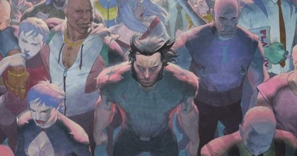

Universo em qudrinhos
A Marvel Comics foi fundada por volta de 1930 e 1940 por Martin Goodman, com o nome de Timely Comics. Goodman, um editor de revistas pulp que começou a vender histórias de faroeste em 1933, expandiu suas atividades para um emergente - e até então bastante popular - mercado de revistas de histórias em quadrinhos originais. Goodman começou a empresa na 330 West 42nd Street, New York City, New York. Ele detinha oficialmente os títulos de editor, editor-executivo e gerente de negócios, com Abraham Goodman ocupando oficialmente o cargo de publisher. A primeira publicação ocorreu em 1939, com o número 1 da revista Marvel Comics, onde se deram as primeiras aparições do super-herói Tocha Humana e do anti-herói Namor, o Príncipe Submarino. A equipe por trás desse sucesso de vendas veio de uma outra editora, a Funnies, Inc., mas no ano seguinte, a própria equipe da editora ocupou este posto. Com a segunda edição, o título da série mudou para Marvel Mystery Comics.
O primeiro editor de quadrinhos da Marvel, o também roteirista e desenhista Joe Simon, se juntou a Jack Kirby, para criar o primeiro herói patriota da história, o Capitão América, em Captain America Comics #1. (Março de 1941). Capitão América logo virou um sucesso, com uma circulação de quase um milhão. Portanto, nos anos 40 a Timely tornou-se muito conhecida.
Em 1939, Goodman contratou o primo de sua esposa, Stanley Martin Lieber, como auxiliar geral de escritório. Quando o editor Simons deixou a companhia no final de 1941, Goodman fez de Lieber - que escreveria sob o pseudônimo de "Stan Lee" - editor provisório da linha de quadrinhos, uma posição que Lee manteve durante décadas, exceto por três anos durante o serviço militar na II Guerra Mundial. Lee escreveu extensivamente para a Timely Comics, contribuindo para vários títulos diferentes.
O mercado americano de quadrinhos de super-heróis caiu no pós-guerra. A Editora de Goodman deixou de publicar a maior parte de suas obras anteriores, e expandiu-se para uma ampla variedade de gêneros que a Timely Comics ainda não havia publicado, com ênfase no gênero de horror, faroeste, humor, animais, crime, quadrinhos de guerra, e posteriormente, acrescentando uma porção de revistas da selva, títulos de romance e até mesmo espionagem, aventura medieval, histórias da Bíblia e esportes. Como outras editoras, Goodman também cortejou as leitoras com quadrinhos principalmente humorístico sobre modelos e mulheres famosas.
A estratégia de negócios do editor Martin Goodman envolvido com suas várias revistas publicadas por várias empresas que operavam a partir do mesmo escritório e com a mesma equipe. Uma dessas empresas de fachada foi chamada de Marvel Comics. Algumas capas de revistas, como All Surprise Comics #12(Inverno de 1946/1947), traziam a frase "A Marvel Magazine" (uma revista Marvel) muitos anos antes Goodman formalmente adotar o nome em 1961.
AS 10 MELHORES SAGAS DA MARVEL NOS QUADRINHOS
Quem lê quadrinhos sabe que a Marvel Comics, especialmente nos últimos anos, se tornou a casa das mega-sagas. A editora passou a investir nos eventos anuais que modelavam toda sua história, e criaram o que há de melhor (e pior) nesse tipo de narrativa épica.
Aqui, você vai descobrir as 10 melhores sagas da Marvel. Aproveitando que mais uma saga está prestes a chegar às bancas em breve – as Guerras Infinitas -, aqui você pode conferir tudo que a Marvel já fez de arrebatador em seus crossovers universais!
CASO SE INTERESSE POR ALGUMA EDIÇÃO CLIQUE NA IMAGEM PARA COMPRAR SUA HQ!
Guerras Secretas (1984)
Abrindo esta lista, começamos com uma das histórias que foi responsável por inventar a estrutura das mega-sagas para a Marvel: as Guerras Secretas originais, que foram publicadas em 1984. O título era puramente comercial, e servia apenas para promover uma linha de brinquedos da Mattel, mas acabou se fortalecendo graças à sua história e suas reviravoltas.
Aqui, um ser celestial chamado Beyonder sequestra vários heróis e vilões e os traz para seu Mundo Bélico, uma arena de gladiadores do tamanho de um planeta. Lá, eles precisam lutar entre si para divertir seu captor. A história tem 12 edições, e acabou trazendo alguns efeitos bem curiosos, como o traje negro do Homem-Aranha e a Titânia.
Vingadores vs X-Men
Um dos títulos mais controversos do Universo Marvel nos últimos anos, Vingadores vs X-Men dividiu tanto os fãs quanto os personagens envolvidos nesse conflito de proporções arrasadoras. Basicamente, vemos as duas equipes de heróis lutando entre si para impedir ou trazer a Força Fênix para a Terra.
Há discordâncias entre quem está certo e quem está errado até hoje, e a saga conseguiu se sair muito bem por trazer uma série de conflitos divertidos, que instigavam a imaginação dos fãs. Além disso, foi um produto colaborativo, trazendo roteiristas como Brian Michael Bendis, Jonathan Hickman e Ed Brubaker, além de artistas como John Romita Jr. e Olivier Coipel.
O Cerco
O Reinado Sombrio foi uma fase editorial que, como seu próprio nome diz, deixou a escuridão tomar conta da Marvel Comics. Tudo isso culminou em O Cerco, uma saga em quatro edições escrita por Brian Michael Bendis, no auge de seu trabalho para os Vingadores. A história centra-se em Norman Osborn tentado destruir Asgard de uma vez por todas.
Para isso, o magnata que assume o manto do Patriota de Ferro conta com a ajuda de Loki. Para impedir a queda definitiva do Reino Dourado, os Vingadores, os Jovens Vingadores e todos os outros heróis que haviam ficado clandestinos após a Guerra Civil unem suas forças, trazendo uma nova era heroica para a Terra.
Infinito

Jonathan Hickman foi um dos melhores escritores - se não o melhor - que já tomou conta dos Vingadores nos quadrinhos. Sua fase na equipe ajudou a mudar todo o papel dos heróis no universo, e além das revistas, ele também desenvolveu algumas sagas que complementavam sua narrativa, como é o caso de Infinito.
É impossível ler Infinito sem os títulos dos Vingadores e dos Novos Vingadores, mas isso está longe de ser um erro. Em vez disso, testemunhamos uma viagem épica no espaço, que envolve não apenas a presença desoladora de Thanos e sua Ordem Negra, mas também os Construtores e várias outras ameaças que põem a Terra em perigo.
Aniquilação

Falando em jornadas cósmicas, uma saga que definitivamente merece sua atenção é Aniquilação. A história foi publicada simultaneamente à Guerra Civil e portanto, acabou sendo um pouco ofuscada. Mas aqui, vemos o Aniquilador fazendo sua investida fatal, consumindo toda a Tropa Nova e se preparando para dominar o universo.
A história possui uma proporção grandiosa jamais vista anteriormente, e reúne personagens muito interessantes, mas que normalmente não possuem tanto destaque - como Ronan, o Surfista Prateado, Nova e até mesmo a Guarda Imperial Shi'ar. O título também serviu como pontapé inicial para a versão dos Guardiões da Galáxia que conhecemos nos cinemas.
Dinastia M
Você já deve ter percebido que Brian Michael Bendis é outro roteirista muito importante da Marvel Comics em seus vários anos de publicação. O escritor começou trabalhando em títulos como o do Demolidor, e logo ganhou espaço entre os Vingadores, comandando a equipe por vários anos.
Dinastia M é uma continuação mais encorpada de seu trabalho em Vingadores: A Queda, e traz consequências grandes não apenas para os Heróis Mais Poderosos da Terra, mas também para os X-Men. O título envolve a Feiticeira Escarlate louca criando uma realidade alternativa... e dizimando a espécie mutante.
A Saga da Fênix Negra
Até hoje, os X-Men sempre funcionaram como uma franquia independente dentro da própria Marvel. Eles frequentemente participam das sagas envolvendo outros heróis, mas suas histórias geralmente são mais independentes e sem tanta influência externa. Talvez seja justamente isso que torna a Saga da Fênix Negra uma obra de arte tão atemporal.
Com a trama centrada puramente nos Filhos do Átomo, vemos o grupo sendo aprisionado pelo Clube do Inferno, o que força a manifestação do lado sombrio da entidade que possui Jean Grey. O resultado é uma destruição catastrófica que vitima bilhões de vidas, e um confronto que leva ao sacrifício supremo de um super-herói para salvar a todos que ama.
Guerra Civil

O grande problema de boa parte das sagas ruins da Marvel nas HQs é justamente a inaptidão em mudar o status quo do universo ou de seus personagens. Se você parar para notar, todas as melhores sagas da editora são justamente as que trouxeram repercussões significativas. E esse é, sem a menor sombra de dúvidas, o caso da Guerra Civil.
Criada por Mark Millar e Steve McNiven, a série aborda o conflito ideológico entre os heróis a favor e contra a Lei do Registro dos Super-Humanos. O título fragmentou o Universo Marvel durante quase uma década, e deixou cicatrizes que ainda são visíveis hoje. É um destaque por abordar principalmente o lado pessoal e ideológico dos personagens.
Desafio Infinito
Provavelmente o melhor produto dos anos 90 para a Marvel Comics, Desafio Infinito toma o merecidíssimo segundo lugar desta lista, por ser a saga que realmente colocou Thanos em destaque - por mais que o Titã Louco já tivesse sido apresentado há vários anos.
Magistralmente escrita por Jim Starlin, com desenhos brilhantes de George Pérez e Ron Lin, a saga ganhou uma reputação tão duradoura e impressionante que chegou a ser a fonte principal para a história de Vingadores: Guerra Infinita. Vale lembrar que é o primeiro capítulo de uma trilogia, precedendo Guerra Infinita e Cruzada Infinita.
Guerras Secretas (2015)
Em primeiro lugar, está uma das sagas mais arrebatadoras que a Casa das Ideias já produziu em toda sua história, e que foi finalizada há pouco mais de dois anos. As Guerras Secretas foram um evento colossal, produzido ao longo de anos pela maestria astuta de Jonathan Hickman - além da arte de Esad Ribic, que é de tirar o fôlego.
O roteirista conduziu a trama por vários anos através do título dos Vingadores e dos Novos Vingadores, e compôs um épico moderno onde o Doutor Destino criava seu próprio mundo com os destroços de vários universos destruídos, forçando os heróis a retornar para tentar restaurar o antigo status quo.